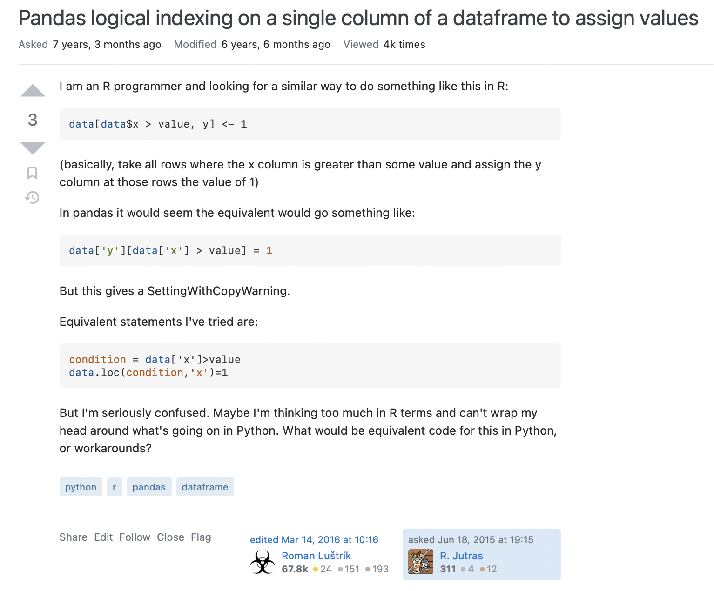
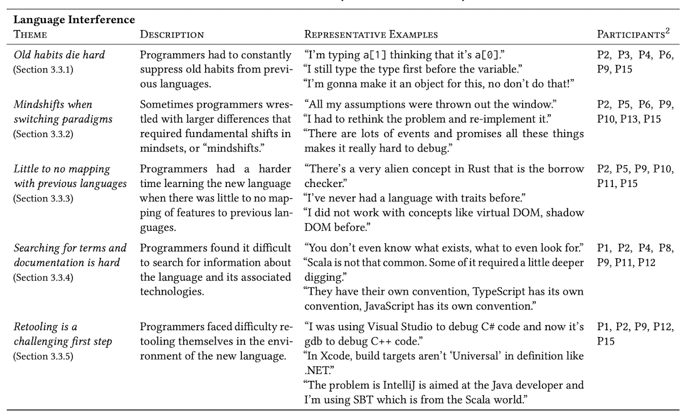
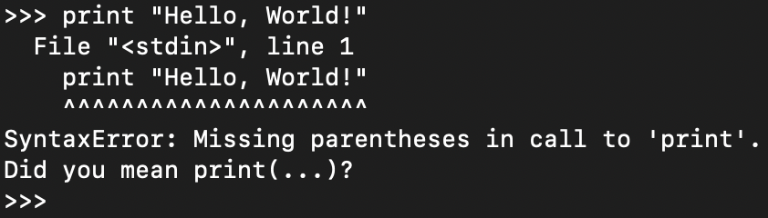

I work on AI + dev tools.
Learning my first programming language was really hard. Learning the second was also hard but probably easier. What about the third or fourth? The Nth? Does each one get easier? Does knowing other languages create new difficulties?
I just read a paper, Here We Go Again: Why Is It Difficult for Developers to Learn Another Programming Language?, that tries to understand the barriers that developers face when picking up another language.
The researchers started by interviewing the famed Peter Norvig who told them: "Most research is on beginners learning language. For experts, it's quite different and we don't know that process. We just sort of assume if you're an expert, you don't need any help."
My intuition is that switching languages is fairly straightforward if the languages follow the same paradigms. You just learn how to map each feature, one to one, while watching out for a small set of corner cases. For instance, moving from Java to C#. They're both statically-typed, interpreted, imperative languages that come with massive standard libraries. What about moving from very different languages, like C# to Haskell? That is when things break down since now you have to learn new concepts and there may not be an obvious mapping of concepts and features between the languages.
But let's see what the research says!
In the paper, they looked at (1) "cross-language interference", which is when prior knowledge of a language disrupts learning new knowledge, (2) how programmers learn another language, and (3) what is confusing when learning a new language.
First, they sampled questions from Stack Overflow where users were asking how to do something in language Y given how it is done in language X. For example, a user had misconceptions about assigning a value in a Pandas data frame because of their experience with R:
In fact, the researchers found that 61% of the 450 sampled questions made incorrect assumptions.
The language pairs with the highest rates of incorrect assumptions were Java/Kotlin, Java/Scala, and C#/Visual Basic.
The lowest rates were Java/C#, Java/PHP, and Python/C++. This one really surprised me: going between Python and C++ doesn't cause much confusion?! Or at least it wasn't captured by this analysis.
To investigate how experienced programmers learn a new language and what they find confusing, they interviewed 16 programmers who recently learned a new language.
The programmers often (1) had to teach themselves without any formal training, (2) picked up new concepts only when they needed it, and (3) would relate the new language to other languages that they already know.
The researchers found 5 themes for what programmers found confusing when learning a new language.
Programmers struggled with old habits, such as arrays being 0-indexed versus 1-indexed.
Switching paradigms forced programmers to rethink their problem. For example, everything is an object in Python yet Julia follows a more functional programming style. On the other hand, the borrow checker in Rust will make just about anyone pull their hair out!
Different terminology and naming conventions make it difficult to even search for help.
Moreover, when learning a new language you often also have to learn all the surrounding tooling. Now you have to learn a new build system, package manager, and maybe even IDE.
Talk about frustrating.
So the next time you design a programming language (or tool), make it easy for users to transition!